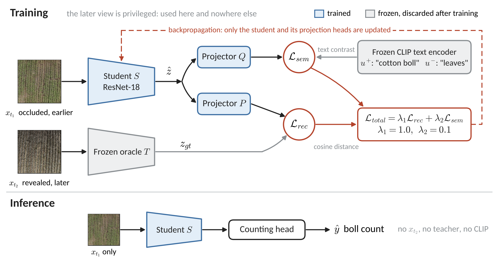
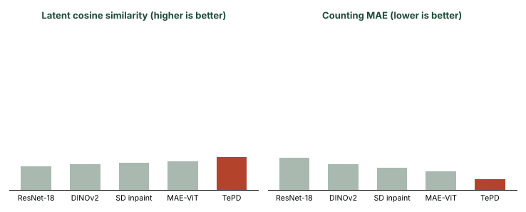

Accepted at the WiML Workshop · NeurIPS 2026 · Atlanta · December 9
TePD: Temporal Privileged Distillation for Amodal Counting Under Structured Occlusion
1The University of Texas at Dallas 2The University of Texas at Tyler 3USDA Agricultural Research Service
Paper (OpenReview)GitHubCompanion: developmental view (DevAI)
Train with the revealed future. Deploy on the occluded present. A later, less-occluded view of the same scene supervises a student network that only ever sees the occluded image.


Abstract
Most amodal vision methods treat occlusion as a spatial distortion to complete or inpaint. TePD asks whether a change in visibility over time can teach a model what stays geometrically fixed. We pair an occluded view with a registered later view of the same location and use the later view as privileged information: available during training, absent at test time. A frozen oracle encodes the revealed view, a lightweight student encodes the occluded one, and the student is trained to match the oracle in feature space while a frozen semantic anchor keeps it on the target. On Cotton-TePD, 3,000 registered UAV image pairs taken before and after chemical defoliation, the student reaches a latent cosine similarity of 0.873 and a counting MAE of 4.2, against 0.745 and 7.2 for the strongest baseline evaluated.
1Why
Most amodal vision methods treat occlusion as a spatial distortion to complete or inpaint. Counting is less forgiving than image synthesis: a plausible completion can add or remove objects. Yet many scenes reveal themselves over time. In cotton, chemical defoliation removes the leaf canopy over several days while the bolls stay approximately in place, so the later image holds exactly what the earlier image lacks.
Question. Can the change in visibility itself tell a model what stays geometrically unchanged?
2What
- Future visibility as privileged supervision for amodal perception: available in training, absent at test time.
- A dual-space objective that combines geometric reconstruction with a frozen semantic anchor.
- Cotton-TePD: 3,000 registered 512×512 UAV image pairs taken before and after chemical defoliation, a real time-revealing reference instead of a synthetic one.
3How

ẑ = S(xt1), zgt = T(xt2) | Lrec = 1 − cos(P(ẑ), zgt) | Ltotal = λ1Lrec + λ2Lsem, λ1 = 1.0, λ2 = 0.1
- Geometric term. Projector P maps student features into the frozen teacher's space; cosine distance aligns them.
- Semantic term. A second projector Q maps student features into the frozen CLIP text space, where the loss favors "cotton boll" over "leaves".
- Independent projectors. We do not assume CLIP embeddings and teacher features are comparable.
- At test time the teacher and CLIP are removed. A ResNet-18 student and a counting head run alone.
4Evidence
2,500 training and 500 test pairs, corrected for 1-2 m platform drift with SIFT and RANSAC. LCS scores representation quality in a fixed evaluation space. MAE scores counting with the encoder frozen and a basic regression head, which isolates the representation from the counting model.
(best baseline 0.745)
(best baseline 7.2)

| Method | Learning signal | LCS ↑ | Counting MAE ↓ |
|---|---|---|---|
| ResNet-18 | direct supervision | 0.621 | 12.4 |
| DINOv2 | zero-shot features | 0.684 | 9.8 |
| Stable Diffusion | inpainting | 0.712 | 8.5 |
| MAE-ViT | masked reconstruction | 0.745 | 7.2 |
| TePD (ours) | temporal privilege | 0.873 | 4.2 |
Across the three study regions: LCS 0.871 / 0.875 / 0.869 and MAE 4.1 / 4.3 / 4.2, evidence against a place-specific effect.
5Controls


6Scope
- For sequences where occlusion decreases over time while the target keeps its form. Validated on cotton only.
- Homography handles platform drift, not irregular motion: wind above 15 mph causes 5-10 cm displacements in about 2% of cases, and shadows can imitate a newly visible feature.
- Partial or uneven revelation and dynamic scenes remain to be evaluated.
The objective itself is not tied to crops. It needs two registered observations of one scene, occlusion that decreases between them, and object identity that persists. Snow melt, tidal recession, staged assembly and repeated robot interaction are candidate settings; none has been tested.
7Citation
@inproceedings{manjunatha2026tepd,
title = {TePD: Temporal Privileged Distillation for Amodal Counting Under Structured Occlusion},
author = {Manjunatha, Harshitha and Sundaravadivel, Prabha and Borah, Shekhar Suman and Tamil, Lakshman and Torbert, H. Allen},
booktitle = {Women in Machine Learning (WiML) Workshop at NeurIPS},
year = {2026}
}